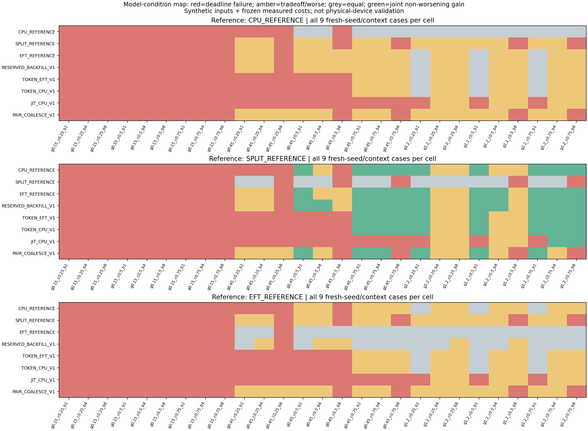
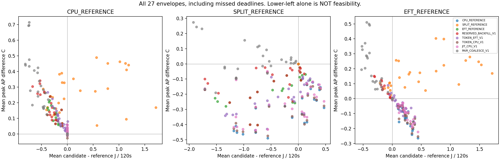

실측 계수에 합성 도착과 공통 처리시간 전이 가정을 적용한 PC 탐색입니다. 새 실측·정확도 PASS·실제 절감률이 아닙니다. 기한 전체 충족과 J·최고 AP·AP 면적을 별도로 판독합니다. 응답 P95 손해도 CSV에 보존합니다.
설계·결과·한계 | 모든 조건·기준별 결과 | 개발에서 동결한 선택기의 새 seed 결과


기준별 비교이며 가장 약한 기준만 골라 EFT보다 낫다고 주장하지 않습니다. 표시상 수치 허용값 1e-8은 부동소수 비교용이며 정확도 합격선이 아닙니다.
| 기준 | 정책 | 조건 수 |
|---|---|---|
| CPU_REFERENCE | CPU_REFERENCE | 0 |
| CPU_REFERENCE | SPLIT_REFERENCE | 0 |
| CPU_REFERENCE | EFT_REFERENCE | 0 |
| CPU_REFERENCE | RESERVED_BACKFILL_V1 | 0 |
| CPU_REFERENCE | TOKEN_EFT_V1 | 0 |
| CPU_REFERENCE | TOKEN_CPU_V1 | 0 |
| CPU_REFERENCE | JIT_CPU_V1 | 0 |
| CPU_REFERENCE | PAIR_COALESCE_V1 | 0 |
| SPLIT_REFERENCE | CPU_REFERENCE | 9 |
| SPLIT_REFERENCE | SPLIT_REFERENCE | 0 |
| SPLIT_REFERENCE | EFT_REFERENCE | 10 |
| SPLIT_REFERENCE | RESERVED_BACKFILL_V1 | 11 |
| SPLIT_REFERENCE | TOKEN_EFT_V1 | 8 |
| SPLIT_REFERENCE | TOKEN_CPU_V1 | 8 |
| SPLIT_REFERENCE | JIT_CPU_V1 | 2 |
| SPLIT_REFERENCE | PAIR_COALESCE_V1 | 6 |
| EFT_REFERENCE | CPU_REFERENCE | 0 |
| EFT_REFERENCE | SPLIT_REFERENCE | 0 |
| EFT_REFERENCE | EFT_REFERENCE | 0 |
| EFT_REFERENCE | RESERVED_BACKFILL_V1 | 0 |
| EFT_REFERENCE | TOKEN_EFT_V1 | 0 |
| EFT_REFERENCE | TOKEN_CPU_V1 | 0 |
| EFT_REFERENCE | JIT_CPU_V1 | 0 |
| EFT_REFERENCE | PAIR_COALESCE_V1 | 0 |